1.2 Theoretical Background
Electrical instruments are used in the laboratory to measure quantities, to provide external signal stimulus to circuits and to view graphically the behavior of the circuits for a given stimulus.
1.2.1 Breadboard
A breadboard is a simple device designed to let you create circuits without the need for soldering. They come in various sizes, and the design can vary, but as a general rule they look something like Figure 1.1. If you’ve never seen one before, you might wonder how to tell which holes do what. It becomes a little easier to understand what’s going on when you see one from the bottom as in Figure 1.2. Seeing it from this perspective makes it easier to understand what is going on.
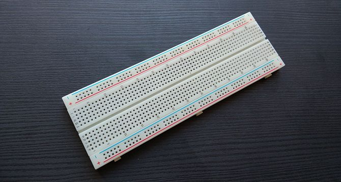
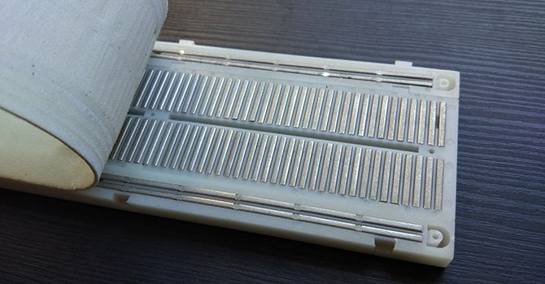
The two larger pieces of wire down each side are typically used to connect a power source to the board. They are usually referred to as power rails. The other smaller pieces of wire running perpendicular all the way across the board are used for components in your circuit. The Figure 1.3 will help visualize this pattern from the top. The power rails run horizontally as two rows at the top and bottom. Meanwhile, the vertical columns run inwards as you move down the board.
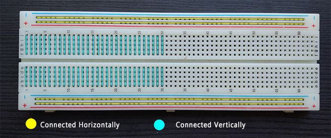
If you were to pull any one of these metal pieces out, just like in Figure 1.4 you would see their purpose. They’re designed to grab onto the legs of any components pushed through the breadboard holes. This allows you to test circuits without having to worry about soldering, or making a good contact with the board. Before we move on, there is one other notable feature of breadboards to know about: The gap in the middle of the breadboard is for integrated circuits as in Figure 1.5. Integrated Circuits (IC) are in almost every electronic device. They run motors, regulate voltage, act as timers, perform logic tasks, and do pretty much anything you need them to. ICs can have different numbers of pins, sizes, and functions. However, many ICs comply to a standard called Dual In-Line Packages (DIP), meaning they all share a set width. That width is—you guessed it—exactly the right size to fit across the gap in the middle of the breadboard. This makes it much easier to work with ICs without worrying about accidentally connecting the wrong pins together.
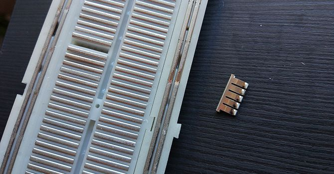
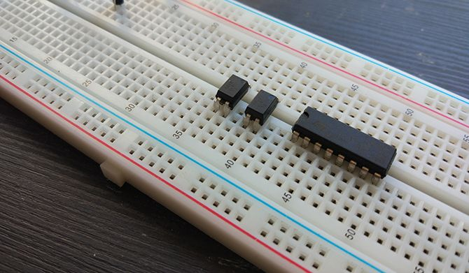
It is important to breadboard a circuit neatly and systematically, so that one can debug it and get it running easily and quickly. It also helps when someone else needs to understand and inspect the circuit. Here are some tips:
- Always use the side-lines for power supply connections. Power the chips from the side-lines and not directly from the power supply.
- Use black wires for ground connections (0V), and red for other power connections.
- Keep the jumper wires on the board flat, so that the board does not look cluttered.
- Route jumper wires around the chips and not over the chips. This makes changing the chips when needed easier.
- You could trim the legs of components like resistors, transistors and LEDs, so that they fit in snugly and do not get pulled out by accident.
1.2.2 Digital Multimeter (DMM)
The two types of measuring instruments in common use are analog and digital meters. In this lab, we will be using only digital meters. Meters having a single-function are called panel meters e.g., voltmeter, which can measure only the voltage where as the meters with multiple functions are called multimeters which have the ability to measure a variety of electrical quantities such as voltage, current and resistance.
A digital multi meter is used to measure voltage, current and resistance. It has the feature to measure these three quantities at different settings of the function knob. The function knob is also used to set the ranges for measurements.
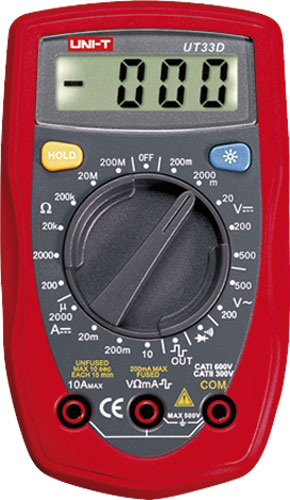
The meter is fairly accurate when it is used to measure dc voltages and currents. However, the ac measurements may or may not be accurate depending on the quality of the meter. The meter is usually calibrated to measure sinusoidal ac RMS values. When measuring RMS values of other waveforms, the readings may not be correct. When DMM is used as a voltmeter it is connected in parallel. Since the DMM has two leads “BLACK” and “RED”, with black always connected to “COM” terminal, a positive value indicated by the voltmeter shows that the point where the red lead is touching is positive with respect to the point where the black lead is touching and vice versa.
When DMM is used as an ammeter it is connected in series. If an ammeter indicates a positive value this means the direction of the current is into its positive terminal and out of its COM terminal and vice versa. When measuring resistance, make sure that the resistor is not connected to any other component or power supply.
CAUTION: Make sure that the function knob is on the appropriate scale when you are measuring any electrical quantity. Never measure voltage with current settings or current with voltmeter. It is also advisable that currents may be measured indirectly by measuring voltages across known value of resistors. OR else pay a fine of Rs. 3000/- in case the DMM is damaged.
1.2.2.1 General Procedure to use DMM
- Disconnect multimeter from the circuit.
- Set the knob correctly according to the parameter to be measured.
- Connect multimeter to the circuit.
- Repeat the above steps to change the knob position.
1.2.2.2 Resistor Measurement
- Disconnect the resistor from the circuit.
- Set the knob correctly to ohmmeter.
- Place the resistor on the breadboard and measure its resistance.
1.2.2.3 Voltage Measurement
- Set the knob correctly to voltmeter.
- Connect voltmeter to the two terminals of component between which the voltage is to be measured.
1.2.2.4 Current Measurement
- Break the path of the current to be measured.
- Set the knob correctly to ammeter.
- Insert ammeter in the broken path to complete it. Ammeter is connected in series.
- After measurement, remove ammeter and join the broken path.
1.2.3 DC Power Supply
A laboratory DC power supply provides a stable and adjustable DC voltage for operating electronic circuits. It normally displays both the output voltage and the current being drawn by the connected circuit. A single-output supply provides one adjustable output, while a dual-output supply provides two independently adjustable outputs.
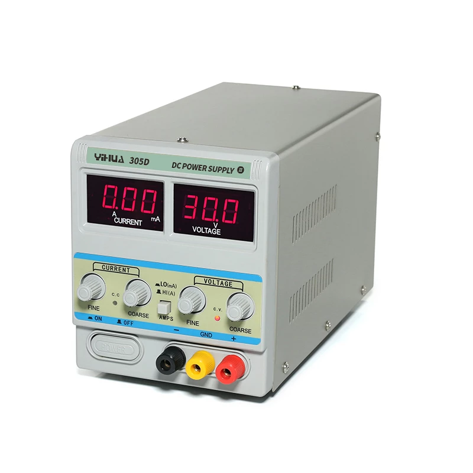
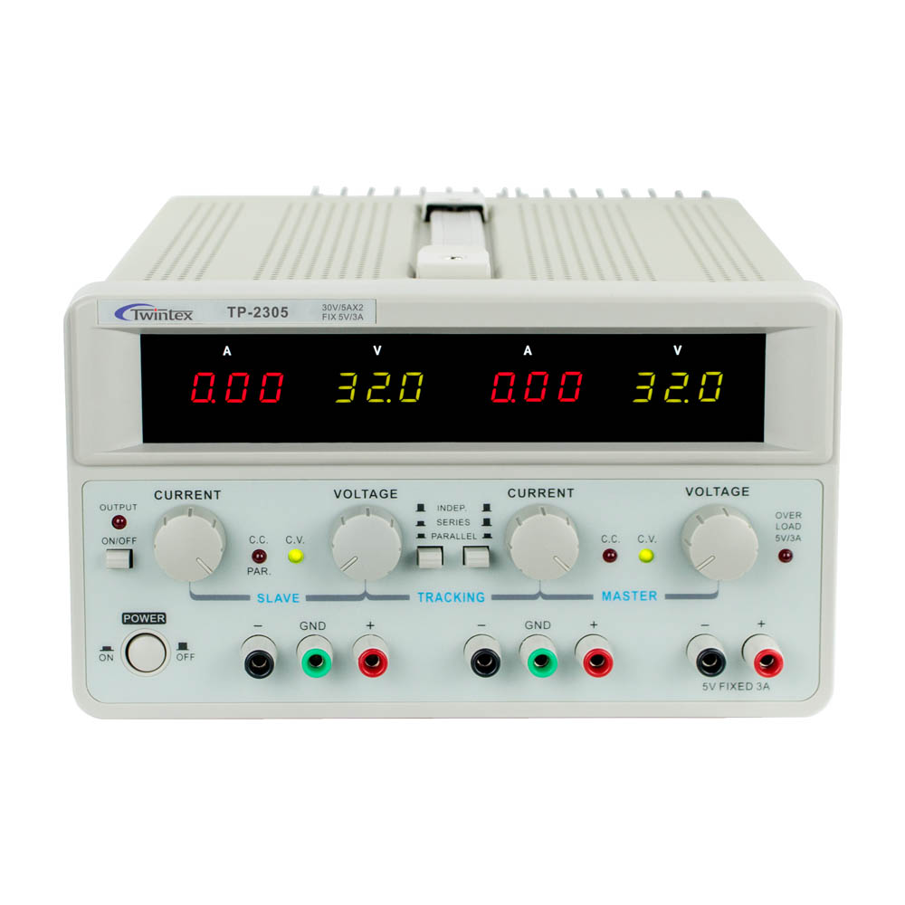
Main Controls and Terminals
- Voltage control: Adjusts the output voltage. Some supplies provide coarse and fine controls for faster and more accurate adjustment.
- Current control: Sets the maximum current that the supply is allowed to provide. This protects the circuit if it draws excessive current.
- Voltage display: Shows the voltage available at the output terminals.
- Current display: Shows the current being drawn by the connected circuit.
- Positive terminal: Usually red and connected to the positive supply rail.
- Negative terminal: Usually black and connected to the circuit’s return or negative rail.
- Ground terminal: Usually green and connected only when an earth-ground reference is required.
- Output control: Enables or disables the voltage at the output terminals without switching off the complete instrument.
Basic Operating Procedure
1. Prepare the Power Supply
- Make sure that the circuit is not connected to the output terminals.
- Check that the OUTPUT switch is off. If the supply does not have a separate output switch, keep its main POWER switch off.
- Turn the VOLTAGE and CURRENT controls anticlockwise to their minimum positions.
- For a dual-output supply, select the required channel. Keep the supply in independent mode unless series, parallel, or tracking operation is specifically required.
2. Turn On the Power Supply
Press the main POWER button. The voltage and current displays should illuminate. Do not connect the circuit yet.
3. Set the Current Limit
The current limit must be set before applying voltage to the circuit because it protects the components from excessive current.
Both supplies shown use CURRENT control knobs rather than a current-set button. Set the current limit using the appropriate current-control knob as follows:
- Keep the voltage control at a low setting.
- Temporarily connect the positive and negative output terminals using a suitable shorting lead.
- Enable the output by pressing the OUTPUT ON/OFF button. The supply should enter constant-current mode, indicated by the C.C. light.
- Turn the CURRENT control clockwise until the current display approaches the required limit. If separate coarse and fine controls are available, use the coarse control first and the fine control for the final adjustment.
- Disable the output and remove the shorting lead.
Important: A shorting lead should only be used for setting the current limit. It must be removed before connecting the circuit.
4. Set the Output Voltage
- Keep the circuit disconnected and the output disabled.
- Turn the VOLTAGE COARSE control clockwise while observing the voltage display.
- Stop when the displayed value is close to the required voltage.
- Use the VOLTAGE FINE control, if available, to set the exact value.
Some supplies display the set voltage while the output is disabled. If the display remains at zero, briefly enable the output without connecting a circuit, adjust the voltage, and then disable the output again.
5. Connect the Circuit
- Connect the red positive terminal to the positive supply rail of the circuit.
- Connect the black negative terminal to the circuit’s return rail.
- Use the green ground terminal only when an earth-ground reference is required.
- Recheck the polarity and confirm that there are no short circuits.
For a dual-output supply, use the voltage control, current control, display, and terminals belonging to the selected channel.
6. Apply Power to the Circuit
Press the OUTPUT ON/OFF button to enable the output. If there is no separate output button, switch on the main power only after completing and checking all connections.
Observe the voltage and current displays:
- The C.V. indicator means that the supply is maintaining the selected voltage. This is the normal operating condition.
- The C.C. indicator means that the circuit has reached the selected current limit. If this happens unexpectedly, disable the output and check for an incorrect connection, excessive load, or short circuit. Do not increase the current limit without identifying the cause.
7. Switch Off Safely
Disable the output before changing any connection. After completing the experiment, switch off the output, turn the voltage control back to minimum, press the main power button, and then disconnect the leads.
Using a Dual-Output Supply
A dual-output supply contains two adjustable channels. The channels may be used independently to power separate circuits. On supported supplies, they may also be configured in series to obtain a higher voltage or a positive and negative supply. Parallel operation may provide additional current, but it should only be used when the supply specifically supports this mode. The output channels must not be connected together randomly.
Safety Precautions
Always begin with a low voltage and a conservative current limit. Never exceed the voltage or current rating of the connected components. Do not short the output terminals except briefly while following the current-limit setting procedure, and always switch the output off before changing circuit connections.
1.2.4 Signal Generator
Signal generator is primarily a waveform generator. It provides sinusoidal waveform, square waveform and triangular waveform. The frequency and the amplitude of the signal can be set with the help of “Frequency” and “Amplitude” knobs. These waveform may be skewed by manipulating the symmetry knob. The waveform may be added with dc offset values like, for example, to convert a square waveform into a pulse train with the help of “DC offset” knob.
1.2.5 Oscilloscope
In many applications, observing certain voltage waveform in a circuit plays a crucial role in understanding the operation of the circuit. An oscilloscope (sometimes abbreviated as “scope”) is a voltage sensing electronic instrument that is used to visualize certain voltage waveform. An oscilloscope can display the variation of a voltage waveform in time on the oscilloscope’s screen. A probe is used to connect the oscilloscope to the circuit. Oscilloscope shows the potential difference between the two terminals of the probe. The probes are attached to input channels of the oscilloscope. Most oscilloscopes have at least two input channels and each channel can display a waveform on the screen. Multiple channels are useful for comparing waveform. For example, one can observe the voltage waveform at the input and the output terminals of a circuit simultaneously, by using a two channel oscilloscope.
1.2.6 Resistance
Resistance is the opposition to the flow of current. The basic relationship between voltage, current, and resistance is determined by Ohm’s law.
where
- V = Voltage (Potential Difference) across the resistor (in Volts)
- I = Current through the resistor (in Amperes)
- R = Resistance of the resistor (in Ohms)
Given any resistor, its resistance can be found by one of the three methods:
- Using the color codes. This value is called the nominal value and it is only approximate value in which tolerance range is defined.
- Direct measurement using an Ohmmeter. Connect the positive and negative lead of multi-meter in Ohm scale across the resistor. The meter will provide the exact value of resistor. Note: Do not touch your fingers with the resistor while measuring its value otherwise your body resistance will come in parallel with the resistor.
- Measuring the voltage across the resistor and the current through the resistor, then applying Ohm’s law.
1.2.7 Color Code
Here is the color code chart from where resistance nominal value can be find out.
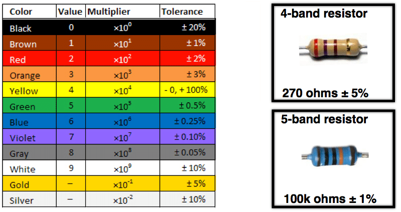
1.2.8 Electric Power and Resistor Rating
The electrical power absorbed by a resistor is the product of the voltage across it and the current through it. By combining this definition with Ohm’s law, power may be calculated in three equivalent forms:
Measured V and I
P = VI
Known I and R
P = I²R
Known V and R
P = V²/R
Units
P in watts, V in volts, I in amperes, and R in ohms.
The absorbed power appears mainly as heat. A resistor’s power rating is the maximum power it can dissipate safely under specified conditions. Select a resistor whose rating is comfortably higher than the calculated dissipation; exceeding the rating can overheat the component, alter its resistance, or cause permanent damage.
Approximate Resistor Size and Power Rating
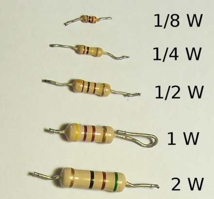
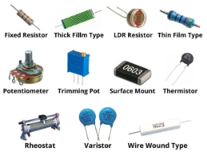
| Typical Rating | Body Length | Body Diameter |
|---|---|---|
| 0.125 W | 3–4 mm | 1.5–2 mm |
| 0.25 W | 6–7 mm | 2–2.5 mm |
| 0.5 W | 8–10 mm | 3–3.5 mm |
| 1 W | 11–12 mm | 4–5 mm |
| 2 W | 15–16 mm | 5–6 mm |
| 3 W | 17–18 mm | 6–7 mm |
Measure only the resistor body. Do not include the wire leads. These dimensions are approximate and may vary with resistor type and manufacturer.
1.2.9 Equivalent Resistance
An equivalent resistance is a single resistance that presents the same terminal behavior as a network of resistors when viewed from two selected terminals, such as A and B.
1.2.9.1 Series Connection
Resistors are in series when the same current must flow through them in one unbranched path. Their equivalent resistance is the sum:
1.2.9.2 Parallel Connection
Resistors are in parallel when both ends of every resistor connect to the same two nodes. The reciprocal of the equivalent resistance is the sum of the reciprocals:
For two resistors only, the convenient product-over-sum form is R eq = (R 1 R 2 )/(R 1 + R 2 ).
1.2.10 Systematic Network Reduction
- Mark the two terminals across which equivalent resistance is required.
- Identify components that definitely share one unbranched path (series) or the same two nodes (parallel).
- Replace one valid group by its equivalent resistance.
- Redraw the remaining network so that the new nodes and branches are clear.
- Repeat until one resistance remains between the selected terminals.
- Before measuring with a DMM, switch off and disconnect every power source.
Important: Components that appear beside each other in a drawing are not necessarily in series or parallel. Determine connections from the circuit nodes.